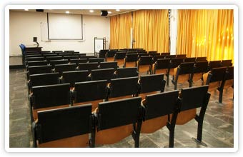

How to get to the University from the Hotel: Cross the river, then you can use the tram 7 to get to the San Mamés bus station and then take the bus 2318 to the University. For how to move within the University, see [link]. The Science Building is

Arrival: when you arrive at the University, please go to the main entrance of the Science building. Then we will pick you up. You can call
Geza Toth 0034 683 640 839 (Spanish Mobile)We will pick you up and bring you to the lecture hall.
Time:
3-5 September: Talks (30 minutes and 45 minutes)
5-7 September: Discussions
Place: Sala Anexa ZTF-FCT (maximum capacity: 68 persons)
Conference wifi: qed3wifi
September 3
9:30 Opening
10:00 M. Navascues: Quantum Steering and Space-Like Separation
10:45 M. Kleinmann: Why Alice and Bob don't see post-quantum correlations
11:15 Coffee
11:45 D. Gross: Entanglement Polytopes
12:30 C. Budroni: Optimal inequalities for quantum contextuality
13:00 Lunch Break
14:30 M.W. Mitchell
15:15 I. Urizar-Lanz: Differential magnetometry with multipartite singlets
15:45 Coffee
16:15 C. Schwemmer: Permutationally invariant tomography of symmetric Dicke states
17:00 G. Vitagliano: Spin squeezing inequalities for spin-j particles
17:30
20:30 Conference dinner
September 4
10:00 J. Siewert: Quantitative two-qutrit entanglement
10:45 C. Elstschka: A quantitative witness for Greenberger-Horne-Zeilinger entanglement
11:15 Coffee
11:45 L. Lamata: Efficient Generation of Symmetric Entanglement Classes in Trapped Ions
12:30 Z. Zimborás: Symplectic and Unitary
13:00 Lunch Break
14:30 P. Horodecki: Quantum privacy witness and collective uncertainty entanglement test
15:15 T. Moroder: Theoretical aspects of permutationally invariant tomography
15:45 Coffee
16:15 A. Osterloh: Measurement of entanglement: Comb-Approach versus Ω-process
17:00 L. Novo: Detecting entanglement of permutationally invariant states with PPT mixtures
17:30 Group Photo
September 5
10:00 O. Gühne: Quantum information geometry
10:45 M. Ali: Generating genuine multipartite entanglement via XY interaction and via von Neumann measurements
11:15 M. Hofmann: Scaling of genuine multiparticle entanglement in spin chains
11:45 Closing remarks